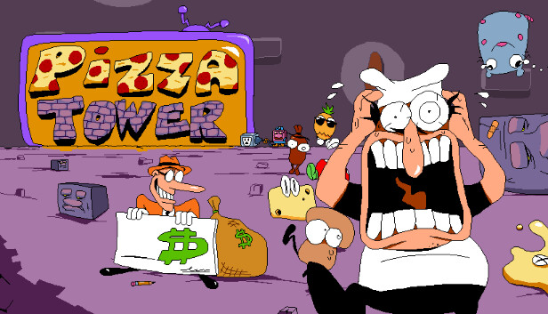
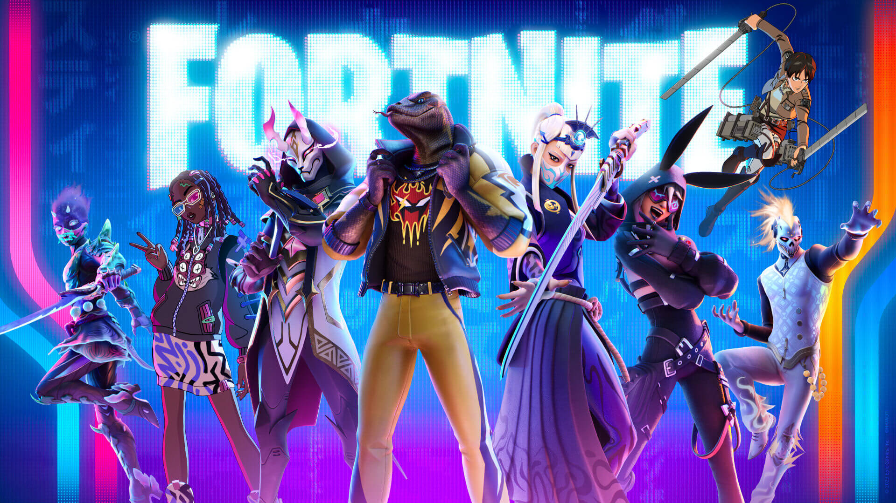

Plataformas: Nintendo Switch, Android, PlayStation 4, Xbox One, macOS, Project xCloud, Microsoft Windows, GNU/Linux, Mac OS
Personalmente hablando es uno de mis juegos favoritos a los que le he dedicado mucho tiempo, es un metoridvania con melodias y paisajes hermosos. Sin duda es uno de los mejores juegos que he jugado.
Five Night's At Freddy's
Plataformas: Nintendo Switch, Android, PlayStation 4, Xbox One, macOS, Microsoft Windows, GNU/Linux, Mac OS
Este juego de terror es uno de los mejores de su categoria la historia trata de un asesino desquisiado que mata a 5 niños metiendolos en animatronicos, las almas de los niños poseen al animatronico y estos buscan venganza por quien los mato, sin duda te dejara temblando, cuenta con mas de 8 juegos mas relacionados con este, una maravilla de juego.
UNDERTALE
Plataformas: Nintendo Switch, PlayStation 4, Xbox One, PSP.
UNDERTALE es uno de los mejores juegos tambien creado por toby fox, es un juego Indie que ha sido muy reconocido mundialmtente hablando, este juego sin duda te llena de Determinacion.
Pizza Tower
Plataforma: Microsoft Windows
Pizza Tower es un juego de plataformas de 2023 creado por el desarrollador independiente Tour De Pizza. Sigue a un chef de pizza, Peppino Spaghetti, que debe escalar una torre para evitar la destrucción de su pizzería.

DELTARUNE
Plataformas: Android, Nintendo Switch, PlayStation 4, Microsoft Windows, macOS, Mac OS
DELTARUNE es un juego indie creado por toby fox, aun esta en proceso de demo tomando ya 5 años desde su demo y aun sige en proceso dando informacion cada 3 o 4 meses.
Apex Legends
Plataformas: PC, PlayStation 4, Xbox One y Nintendo Switch. Próximamente en Android e iOS.
Apex Legends es un Battle Royale más intenso y frenético que apuesta por unos escenarios más verticales. Manejas a personajes con habilidades únicas que pueden ser ofensivas, defensivas o de apoyo. Es un juego muy adictivo.
Fortnite
Plataformas: PC, PlayStation 4, PlayStation 5, Xbox One, Xbox Series X/S, Nintendo Switch y Android. La versión para iOS está descontinuada.
En lo que respecta al género Battle Royale, ¡Fortnite es el rey imbatible! Posee una legión de jugadores gigantesca, con millones de personas luchando por sobrevivir día tras día. Es uno de los juegos que esta siempre en constante actualizacion.

Minecraft
Plataformas: PC, Wii U, Nintendo Switch, Nintendo 3DS, Xbox 360, Xbox One, PlayStation 3, PlayStation 4, PlayStation Vita, Android e iOS.
Minecraft es el juego perfecto para vivir mil y una aventuras con tus amigos. Es un juego de supervivencia que hace mucho hincapié a la exploración, combate, creación de ítems y construcción de edificios. Es un gran juego para pasar el tiempo.
Rocket League
Plataformas: PC, PlayStation 4, PlayStation 5, Xbox One, Xbox Series X y Nintendo Switch.
Rocket League tiene tras de sí un público fiel que le encanta demostrar sus habilidades al volante o ver a otros jugar. La mezcla de coches con fútbol funciona de maravilla. es muy entretenido de jugar aunque puede llegar a ser algo tedioiso si no lo llegas a dominar completamente.
Rust
Plataformas: PC, Xbox One y PlayStation 4.
Rust, si bien acoge menos jugadores que Minecraft o ARK: Survival Evolved, es un survival decente con bastante actividad. La premisa es sencilla: empiezas desnudo en un sitio desconocido, y tu cometido es sobrevivir por todos los medios posibles.
Counter-Strike: Global Offensive
Plataformas: PC. También en PlayStation 3 y Xbox 360, pero son versiones abandonadas.
CS:GO (Counter-Strike: Global Offensive) mantiene su pie bien apretado sobre el acelerador. Cientos de miles de jugadores juegan diariamente a este shooter competitivo. La puntería, reflejos y control de retroceso de las armas son tres aspectos a dominar si uno quiere ganar partidas. Es un juego que muechas personas lo llegan a tomar muy personal asi que te recomiendo que practices en partidas casuales y no en las rankeds.
Dota 2
Plataformas: PC.
Dota 2 es el único MOBA que puede convivir con League of Legends, ¡y tiene motivos de peso para ello! Todos los jugadores tienen acceso al plantel completo de personajes. Desde el principio, puedes experimentar con los roles, habilidades e ítems hasta encontrar tu estilo de juego.